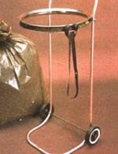

A handy Solution to a "SHORT-HANDED" PROBLEM:
Anyone who has raked leaves alone (and who hasn't?) knows that bagging all those "tree sheddings" can be a real nuisance. Put simply, the problem is this: Two hands are required to hold the bag open, and two more are needed to pick up your "harvest". So-since most folks have only one pair of hands-any solo yard-cleaning performance can turn into a real comedy act.
You can remedy this situation, however (and save yourself some time and temper), by whipping up one of MOTHER's bag carts. The whole project won't soak up more than an hour of your time, and chances are that you already have most (if not all) of the necessary parts ... just sitting around and waitin' to be discovered.
After all, our bagger only has a few components: An old bicycle rim (16" or larger in diameter), a pair of small wheels with their axle (baby carriage rollers or a child's wagon wheels will do just fine), 10' of 1/2" electrical conduit (professionally called E.M.T. or electrical metallic tubing), a 4" length of 5/8" wood dowel, and some assorted hardware will do the job.
Start by separating the tire and tube from the rim-if they're not already off-and then carefully remove the rubber band which guards the tube from the spoke ends. (This strap will be used later to secure the bag to the bagger.) Once the tire and tube are off, you can take the spokes (and hub) out of the rim by loosening the wire "struts" with a spoke wrench or screwdriver. If you don't plan to reuse the spokes for their intended purpose, you can save some time by clipping them-close to the rim-with a pair of sidecutters. (By the way, keep those clipped wheel braces handy ... they're fine for wiring things together, reaming out holes, or doing yeoman duty as small hooks.)
Now that your materials are collected, you're ready to bend the conduit to form the frame. (Unfortunately, satisfactory bending is almost impossible without a tube bander, and-if you don't have such a tool-you may find it less expensive in the long run to buy one than to have the work done. (Benders are available for between $15 and $20.)
First find the exact center of your 10' length of conduit, and measure out 3-1/2"-in each direction-from this central spot. Begin to make a 90° bend at each of these two points ... to form the tubing into a "U" shape. (Remember that a 90° turn eats up about six inches of tube, so make all your subsequent measurements f rom the ends of the arcs.)
Next, move 32" down each leg, and form a right-angle curve ... perpendicular to the last 90° turn. (When the finished cart is upright, the 32" sections will stand vertically to form the legs, while all the tubing beyond these most recent bends will run parallel to the ground.)
Measure off another four inches on each side and twist two more 90° arcs ... causing the ends of the tube to face each other To fasten the E.M.T. together, slide about one inch of each tip of your 5/8" dowel into an open end, drill a small hole though both pieces of conduit (all the way into the dowel), and secure the "joints" with wood screws. Finally-to increase your toting comfort-measure down eight inches from the top of the handle and band each tube to about a 30° angle ... to form a stepback.
With the frame solidly assembled, determine the best position for the wheeland-axle assembly. (it should be placed so the cart will rest upright while the "bass"-the loop of tubing which will support the leaf bags-is roughly parallel to the ground.) Then drill an "axle-sized" hole through both tubes, slide the axle into place, and fasten the wheels with washers and cotter pins.
Once that's done, it's time to attach the bag holder, which is made from the bicycle rim. Mark a spot on each leg just below the stepbacked handle. While holding the rim level (parallel to the ground) at these points, drill a 1/4" hole through each frame tube and through the metal "hoop". Use a stack of washers (or a couple of half-inch-long chunks of tubing ... or a pair of old lawn-mower valve springs ... or anything that will provide "spacing") to separate the rim from the frame, and fasten the assembly together with two 1/4" X 2" carriage bolts, washers, and nuts. (if your spacers are at least half an inch thick, there will be sufficient room to wrap the lip of the bag over the bicycle rim.)
Place the plastic leaf bag inside the bike rim and fold a few inches over the edge of the bicycle wheel. Use the band of rubber (from the rim) to hold the bag in place. (If your elastic has deteriorated, a screen door spring-bent into a loop with its ends hooked together-will also work.) And, should you And your full bags sagging through the frame tubes on the way to the compost pile, there's a remedy for that problem, too. Just drill a small hole through each conduit "upright"-between the rim and the axle-and string some stout wire from one tube leg to the other. The bag will rest against the strand while you roll.
You can either paint your new leaf cart or leave its "stock" flashy metallic finish ... since E.M.T. is resistant to corrosion. In either case, you'll find that-though the bagger won't make raking leaves a pleasure-it is a step in the right direction. And while you're working, try taking a positive point of view: Think of the great mulch you're going to have for next spring's garden.
|
 STAFF PHOTO |
|
|